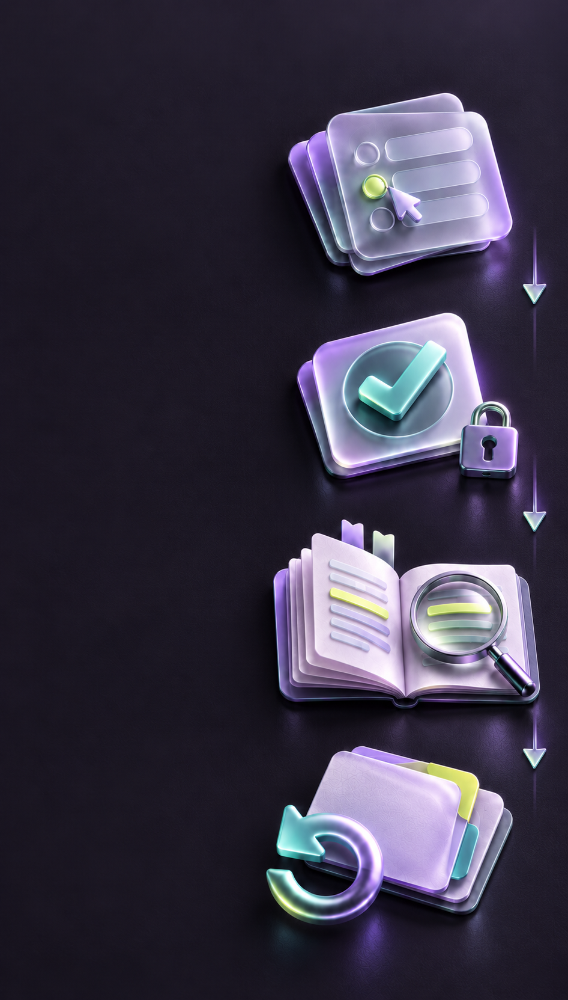

От ответак следующей попытке
Выбор
Черновик можноменять.
Проверка
Ответ фиксируется.Появляются баллы.
Разбор
Объяснения,памятка,источники.
Повтор
После теста:ошибки и пропускив новой попытке.

Черновик можноменять.
Ответ фиксируется.Появляются баллы.
Объяснения,памятка,источники.
После теста:ошибки и пропускив новой попытке.